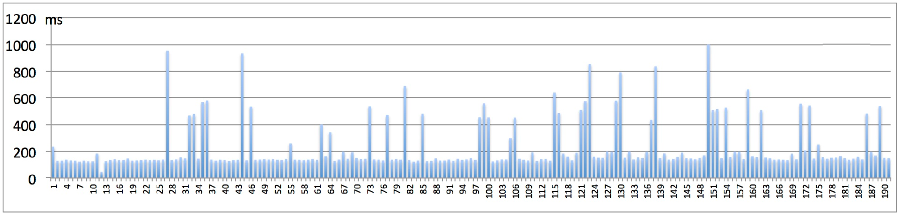
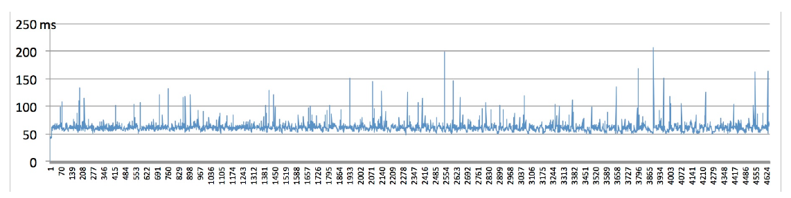
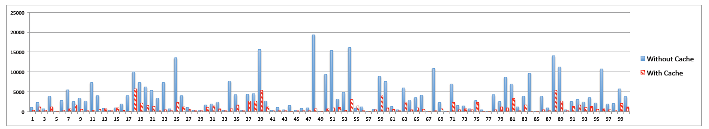

Geolocation Inference
Inferring user geolocation via browser cache.
Based on a paper by Yaoqi Jia, Xinshu Dongy, Zhenkai Liang, and Prateek Saxena.
Presented by Mohammad Doleh
Locating the User
- IP Address
- Users can use VPN or Tor for anonymity
- Not accurate for mobile networks
- Device GPS Sensors
- Users can easily decline permission
Some Websites Provide Location-Oriented Pages
- Google.com
- Craigslist
- Google Maps
What's the Big Deal?
- Modern browsers tend to cache static resources
- Can't query the browser cache
- But can observe the load time of the resource
Threat Model
- Attacker has a website
- A victim visits their site and gets their browser cache probed
- Attacker can attempt to load location-based resources from popular sites to determine the victim's location
- We are assuming the victim as rejected GPS access and is using IP Address masking services (VPN or Tor)
Querying the Victim's Browser Cache #1
<img src="some-location-specific-resource" />
- Save the start time and end time and compute the difference after the resource loads
var image = document.createElement(‘img’);
image.src = url;
image.setAttribute(‘startTime’, (new Date().getTime()));
image.onload = function()
{
var endTime = new Date().getTime();
var loadTime = endTime - parseInt(this.
getAttribute(‘startTime’));
}
Querying the Victim's Browser Cache #2
- Cross-Origin Resource Sharing (CORS)
- Similar to the previous technique but make the request manually in JavaScript
var starTime, endTime, loadTime;
var xmlhttp = new XMLHttpRequest();
xmlhttp.onloadstart = function()
{
startTime = (new Date()).getTime();
}
xmlhttp.onloadend = function()
{
endTime = (new Date()).getTime();
loadTime = endTime - startTime;
}
Querying the Victim's Browser Cache #3
<img src="some-location-specific-resource" complete="complete"/>
- Check the complete attribute of the image tag immediately after setting its src property
function cached(url)
{
var image = document.createElement(‘img’);
image.src = url;
return image.complete || image.width+image.height > 0;
}
Querying the Victim's Browser Cache #4
- <iframe>
- Similar to CORS, measure the start and end time then compute the difference
var page = document.createElement(‘iframe’);
page.setAttribute(‘startTime’, (new Date()).getTime());
page.onload = function ()
{
var endTime = (new Date()).getTime();
var loadTime = ( endTime - parseInt(this.getAttribute(‘startTime’)));
}
Geo-interence Attacks on Mainstream Browsers
| Browser |
Image Load Time |
CORS |
<img> complete |
<iframe> |
| Chrome |
X |
X |
- |
X |
| Firefox |
X |
- |
X |
X |
| Safari |
X |
- |
X |
X |
| Opera |
X |
X |
- |
X |
| IE |
X |
- |
X |
X |
Locating a Victim's Country
- Google has 191 geography-specific domains (currently around 200)
- Utilize Google's logo image
- google.com.sg
- /images/srpr/logo11w.png
Experiment
- Attempted to request the logo image and observe the load time
- Utilized the <img> technique
- Queried for the logo 3 times and compared the first query to the other 2
- Logo's Max Age in cache: 31536000ms ~ 8.76 hours
Results

- Cache hits are easily distinguishable from cache misses
Locating a Victim's City
- Craigslist has 712 geography-specific domains (currently around 714)
- Utilize the <iframe> method
- https://cleveland.craigslist.org/
- https://toledo.craigslist.org/
Experiment
- Attempted to request the local page and compare load times utilizing the <iframe> method
- Queried each of Craigslist's 712 city-oriented websites 3 times
- The first query was compared to the other 2
Locating a Victim's Neighborhood
- Google Maps tiles are cached with coordinate information
google.com/maps/vt/pb=!1m5!1m4!1i15!2i12627!3i23720!4i128!2m1!1e0!3m3!5e1105!12m1!1e47!4e0
A specific area will have similar URLs so it is possible to predict the URL for other map tiles
Experiment
- Utilized the <img> method and analyzed load times
- Measured image load time of 4,646 map tiles in New York City
- Each tile queried 3 times and the first query was compared to the other 2
Results

- Difference between cache hit and cache miss was large and easily seen
Reliability of Timing-Based Attacks
- Chrome, Firefox, Safari, Opera, and IE are all vulnerable
Experiment
- Measure page load times 3 times per site against the top 100 Alexa websites
- The average of the 2nd and 3rd measurements are considered cache hit times
Results

- Can reliably measure load time and sniff browser history
Some Observations
- Websites can set X-Frame-Options to SAMEORIGIN or DENY in response headers
- This would prevent loading sites into frames
- Page load time would equal request load time preventing this attack
- However, location-specific resources can still be targeted individually
Prevalence of Location-Specific Resources
- How many websites utilize location-sensitive resources?
Experiment
- Analyzed top 100 Alexa websites and identified location-sensitive sites and their resources
- Excluded 45 domains due to the following:
- Sites related to specific countries (e.g. google.de)
- Sites with pornographic material
- Unreachable sites (e.g. akamaihd.net)
- Visited 55 websites in 5 different countries and recorded URLs of cached resources
Results
- 62% of the analyzed websites have location-specific resources
- A user having visited any of those sites would be vulnerable to the geo-inference attacks